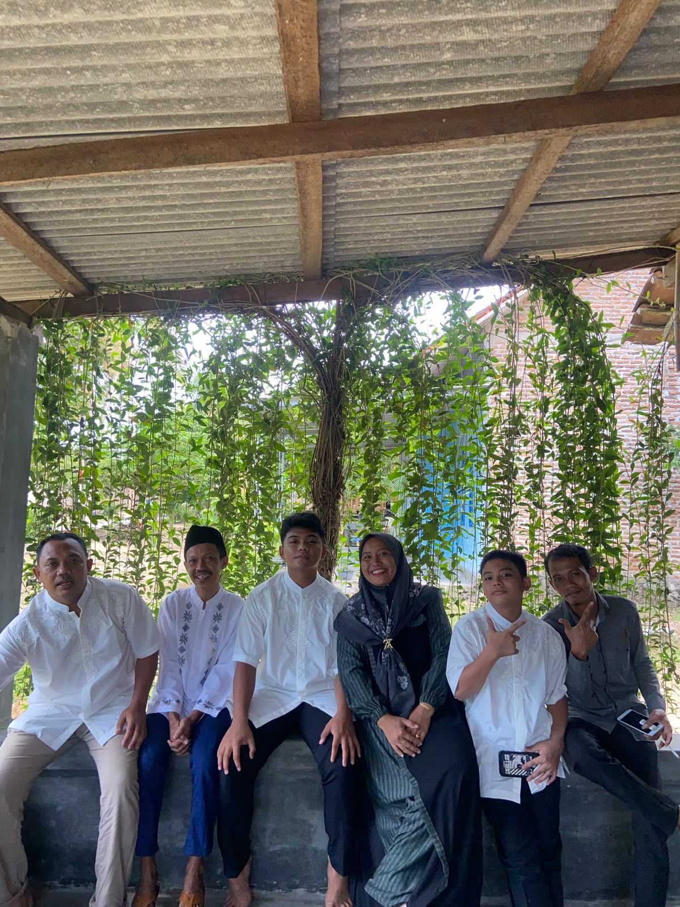
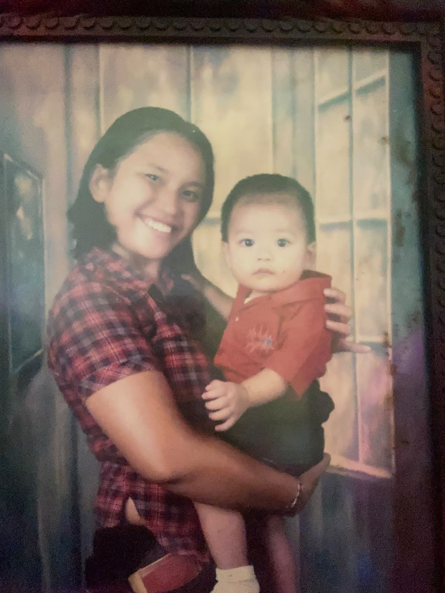
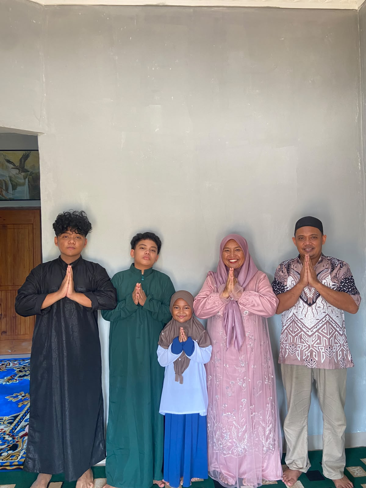

SELAMATDATANG.
Halo selamat datang di bagian rumah saya , disini kalian akan mengetahui gambar gambar dari keluarga , teman dan diri saya .

Halo, Semua nya
Saya Yoga Pangestu, Saya meruapakan anak pertama dari 3 bersaudara dan saya juga men jadi panduan buat adik adik saya. Saya lahir di pekanbaru pada tanggal 05 juli 2007 .
Di luar rumah, saya menyukai hal hal baru akan tetapi semuanya akan tidak akan sama dengan rumah saya dan inilah diri saya ,sebagaimanapun arus tetapi tetaplah pulang .
- BAGAIMANAPUN KONDISINYA HANYALAH RUMAH TEMPAT TERNYAMAN
Jelajahi portofolio
Sekilas tentang saya
- NAMA
- Yoga Pangestu
- KAMPUS
- UIN SUSKA
- JURUSAN
- Sistem Informasi
- ANGKATAN
- 2025
Yang sedang saya kejar
- BelajarMemahami dasar sistem informasi dan teknologi baru dengan rutin.
- BerkaryaMembuat desain dan proyek kecil sebagai latihan nyata.
- BerdisiplinMenjaga keseimbangan antara kuliah, latihan, dan hobi.
Foto

Foto Yoga
images/YogaHero.jpg

Foto bersama keluarga
images/KELUARGA.jpeg